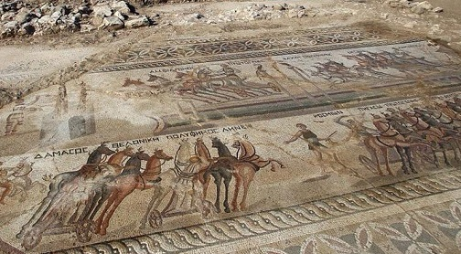

|
C H I P R E .................. Tras la muerte de Alejandro Magno, Chipre fue objeto de rivalidades entre los generales que le sucedieron debido a su riqueza y estratégica situación, cayendo finalmente bajo el dominio de los Ptolomeos de Egipto. En el año 58 a.e.c., Chipre fue anexado al Imperio Romano. Bajo el dominio romano, Chipre gozó de paz y prosperidad. En el 293 Diocleciano dividió el Imperio Romano, Chipre quedó incluido en el Imperio de Bizancio.
La Ruta cultural de Afrodita La ruta discurre por los lugares más
significativos de Chipre asociados con el mito del nacimiento de la diosa
del Amor.
El yacimiento arqueológico de Salamis se encuentra situado a 6km. Destaca el teatro, el gymnasium y las termas públicas. El gymnasium, con su palestra columnada es el edificio más monumental de Salamis. Fue construido por Trajano y Adriano, tras el terremoto del año 76, y reformado nuevamente tras el terremoto del año 331. El teatro romano es el mayor de la isla, con capacidad para unos 15.000 espectadores.
Akaki En Akaki ha visto la luz un mosaico espectacular del siglo IV, que muestra una carrera de carros y otros elementos decorativos. El pavimento decorado, de unos once metros de largo y cuatro de ancho, representa una carrera de carros en un circo romano. El mosaico probablemente formaba parte de una villa romana, de la cual se excavaron algunos restos en 2013.

Paphos El mítico lugar de nacimiento de la diosa Afrodita.
Limassol Destaca su museo Arqueológico. Importantes hallazgos del área de Limassol, desde el Neolítico a la era romana. En las proximidades se localiza el recinto de Kourion y su Museo. Junto al pueblo de Episkopí, se halla una de las más imponentes ruinas arqueológicas de la isla, cuyas excavaciones aún continúan. Destaca el magnífico teatro grecorromano utilizado en la actualidad, la casa de los Eustolios, una villa privada con magníficos mosaicos, la Basílica Cristiana del siglo V y su pila bautismal anexa, la casa de Aquiles, la casa de los Gladiadores, el Estadio y el Elf Ninphoneum, el Santuario de Apolo Hylates.
En junio de 2019 se halla el primer barco romano hundido con la carga intacta que se ha descubierto en Chipre. El pecio naufragó cerca de las turísticas playas de Protaras, al sur del país. Ánforas de vino y aceite.
|